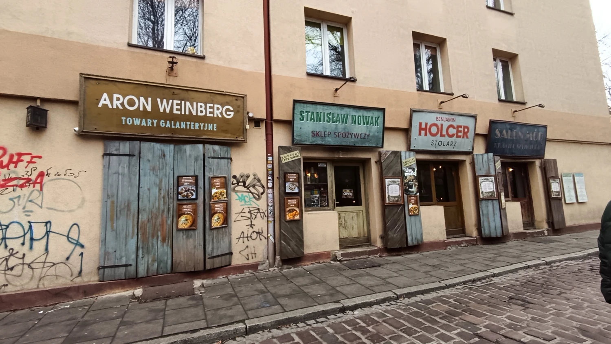
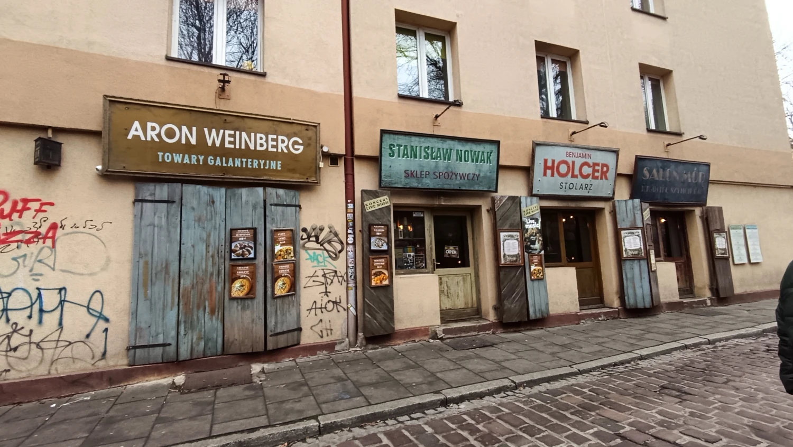
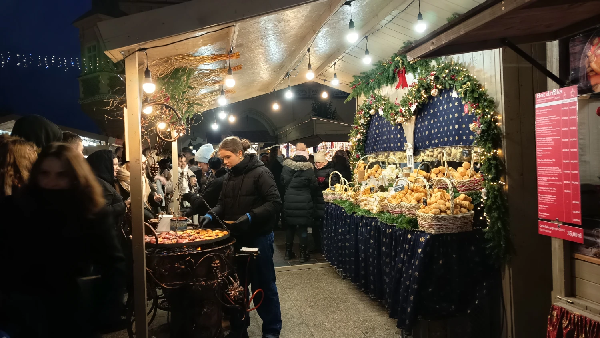
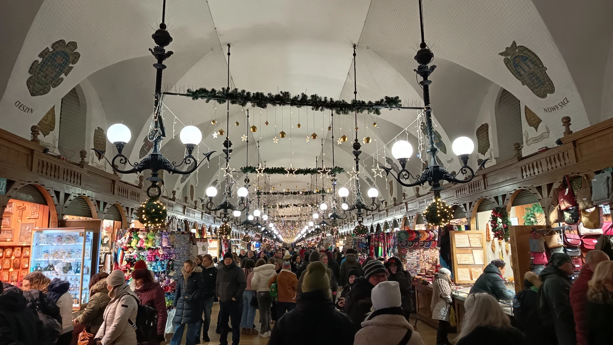
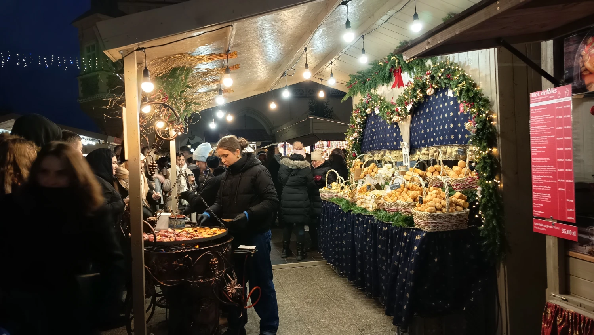
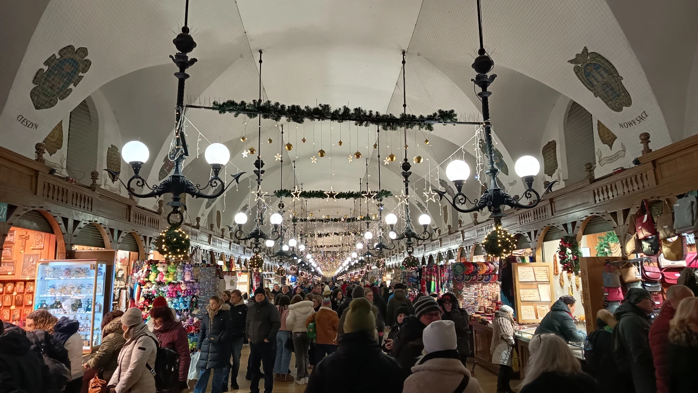

Objev vánoční atmosféru Krakova
Krakov

Letos jsme se vydaly do Krakova na vánoční trhy, opět s České kormidlo. Cesta trvala asi pět hodin a na místě jsme strávily dlouhých osm, aby se řidiči mohli v klidu vyspat. Bohužel to byla naše poslední cesta na vánoční trhy s cestovkou — byla příšerná zima, všude spousta lidí a když jsme se chtěly někam schovat, bylo buď plno, nebo zpoplatněno.
My jsme to ale nakonec vyřešily po svém a šly na výstavu Banksyho. Byly jsme tam sice jen hodinu, ale stálo to za to a byl to nezapomenutelný zážitek. Jeho díla jsme už viděly v Londýně, ale tady byla prezentace mnohem větší a vše na jednom místě.
Upřímně jsme čekaly nějaký větší „wow“ efekt, ale trhy byly docela obyčejné — na Drážďany to rozhodně nemá.
Ochutnaly jsme místní speciality: velké čerstvé koblihy, sýry ve slanině s džemem, zahřály se svařákem a společně s průvodkyní navštívily židovskou čtvrť Kazimierz. To bylo opravdu zajímavé, doplněné i historickým výkladem.
Zaujala mě jedna poznámka paní průvodkyně: Poláci prý hodně pijí, ale doma za zavřenými dveřmi, protože na veřejnosti je pití alkoholu zakázané a od určité hodiny je také zákaz prodeje — a to kvůli problémům spojeným s nadměrnou konzumací, jako je hluk a narušování veřejného pořádku.
Na závěr: nečekejte nic extra, jsou to prostě obyčejné vánoční trhy.
Galerie


 

 


